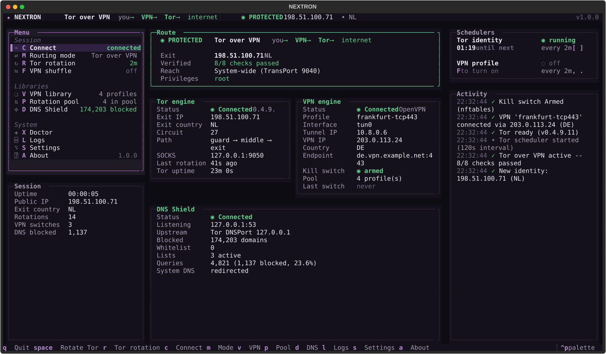
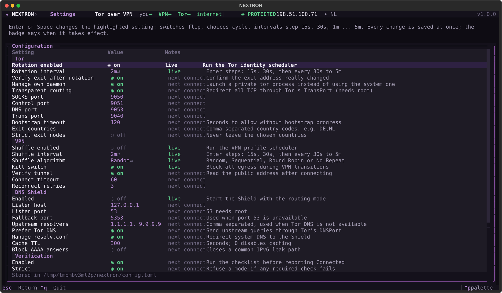

◉ PROTECTEDUp, verified, and covering the whole machine.
v1.0 · open source · Linux
NEXTRON sends your traffic through Tor, a VPN, or both. It arms a kill switch first, blocks trackers at DNS, and then proves the route works. If a required check fails, it takes the route down instead of telling you you're safe.

The real interface, in Tor over VPN. Addresses are documentation examples.
They keep saying it when the tunnel has quietly died, when DNS leaks around it, and when only your browser was ever covered.
NEXTRON reports nothing it hasn't checked. Every status on screen came from a daemon's own output, a socket that answered, or a request that came back.
Routes
Exactly one is live at a time. Switching tears the old chain down in reverse before the new one goes up.
Verification
After every connect, NEXTRON measures your exit before and after, asks Tor about the circuit, and probes for leaks. A failed required check means teardown, not a green light.
At a glance
Colour always means state. Green is carrying traffic, amber needs you, red failed, blue is working. Nothing decorative ever borrows those colours.
◉ PROTECTEDUp, verified, and covering the whole machine.
◉ PROXY ONLYTor works, but only for apps pointed at its SOCKS port. NEXTRON won't call that protected.
◌ EXPOSEDNothing connected. You're on the direct line, and the screen says so.
⠹ CONNECTINGBuilding the route. Press C again to cancel, and whatever had started gets cleaned up.
✗ FAILEDDidn't come up. The reason is in plain words, with the key that fixes it.
Features
A default-drop nftables ruleset goes up before the tunnel, so a tunnel that fails never had a window to leak. A failed connect releases it again, so you're never stranded offline.
table inet nextron_killswitch {
chain output { policy drop;
oifname "lo" accept
oifname "tun0" accept
ip daddr 203.0.113.24 accept } }Its own resolver blocks ad, tracker and malware domains, forwards the rest through Tor, and restores resolv.conf exactly as it was.
174,203 domains on three lists, in the demo
New Tor exit on a timer from 15s to 5m, each one checked to make sure the address really changed. The VPN shuffles across your pool on its own timer.
No sudo? Tor still runs as a SOCKS proxy and the header says PROXY ONLY. If sudo needs a password, it says so in one second, without retrying four times.
Drop .ovpn, WireGuard and blocklist files in a folder. Delete one and it's gone. No hidden copies.
Every setting is marked live, next connect or next launch. Rotation and shuffle switches survive disconnects and restarts.

Get started
git clone https://github.com/jeevansai-k/nextron && cd nextron && ./scripts/install-prerequisites.shnextron doctorsudo nextronThen M pick a route, V pick a profile, C connect.
Pricing
NEXTRON is MIT-licensed software you run yourself. There's no account, no server of ours in your path, and nothing to upgrade to.
$0 forever
NEXTRON ships no VPN service and no blocklists, so nobody else's choices end up on your machine. Use any OpenVPN or WireGuard provider you trust, or skip the VPN and use Tor alone.
No telemetry, no update pings, no account. The only network requests it makes are the ones you can see in the activity log.
FAQ
Not on its own. Tor protects the transport. A logged-in or fingerprintable browser can still identify you. NEXTRON makes sure the routing is what it says it is. The rest is up to how you browse.
For VPN tunnels, the kill switch, system-wide Tor routing and DNS on port 53, yes. Without root, Tor still works as a SOCKS proxy and the header reads PROXY ONLY so you're never misled.
Any that give you an OpenVPN (.ovpn) or WireGuard config. VPN over Tor needs a TCP OpenVPN profile, because Tor can't carry UDP.
A watchdog re-checks the tunnel and re-runs verification on a schedule. The kill switch keeps traffic from falling back to your direct connection while it reconnects.
It blocks ad, tracker and malware domains. Same-origin ads and page clutter still need a browser extension. NEXTRON counts the rules a resolver can't enforce, so you know what you're getting.
Linux, developed on the Debian / Ubuntu / Pop!_OS family, with Python 3.11+ and a 24-bit colour terminal.